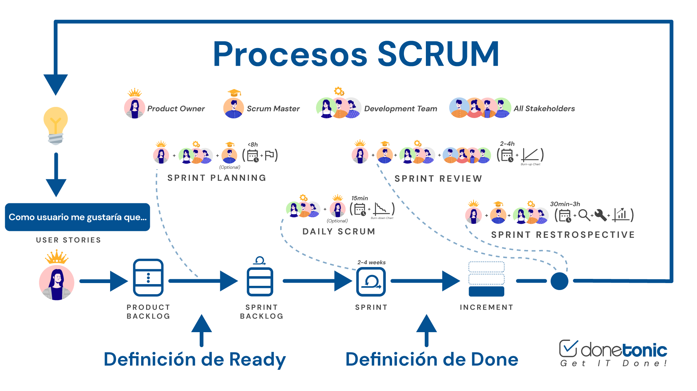

HTTP (Hypertext Transfer Protocol) es el protocolo utilizado para la transmisión de datos en la web. Es la base de la comunicación entre los navegadores web (como Chrome o Firefox) y los servidores donde están alojadas las páginas web. A continuación, te explico sus aspectos clave:
Protocolo de Solicitud-Respuesta: HTTP funciona mediante un modelo de solicitud-respuesta. Cuando ingresas una URL en tu navegador, este envía una solicitud HTTP al servidor que aloja la página. El servidor responde con los datos solicitados, generalmente en forma de archivos HTML, imágenes, y otros recursos que el navegador presenta como una página web.Métodos HTTP: Estos son comandos que definen la acción a realizar sobre un recurso en el servidor. Los más comunes son:
GET: Solicita datos de un recurso específico. POST: Envía datos al servidor para ser procesados (por ejemplo, un formulario). PUT: Actualiza un recurso existente o crea uno nuevo si no existe. DELETE: Elimina un recurso específico. HTTP vs. HTTPS: HTTP es la versión no segura del protocolo, lo que significa que los datos se transmiten en texto plano, sin encriptar. HTTPS (HTTP Secure) es una versión más segura que usa cifrado (SSL/TLS) para proteger la integridad y la privacidad de los datos. Estado HTTP: Cada respuesta HTTP incluye un código de estado que indica el resultado de la solicitud. Por ejemplo: 200 OK: La solicitud fue exitosa.404 Not Found: El recurso solicitado no fue encontrado.
500 Internal Server Error: Ocurrió un error en el servidor.
Cabezeras HTTP: Son parte de las solicitudes y respuestas HTTP y contienen información adicional, como el tipo de contenido (Content-Type), la longitud de los datos (Content-Length), entre otros.
HTTP es fundamental para el funcionamiento de la web, ya que facilita la transferencia de información entre los clientes (navegadores) y los servidores.
| Experiencias | Crecimiento | Aporte |
|---|---|---|
| 1. Apostar | -Completar mis estudios | -Enseñar |
| 2. Amar | -Ser independiente | -Transmitir |
| 3. | - | - |
Scrum es un marco de trabajo ágil utilizado en la gestión de proyectos, especialmente en el desarrollo de software, aunque también se aplica en otras áreas. Su objetivo principal es facilitar la adaptación rápida a los cambios y mejorar la eficiencia en el desarrollo de productos. Aquí te explico los conceptos clave de Scrum: 1. Roles de Scrum Product Owner (Propietario del Producto) : Es la persona responsable de definir y priorizar los requisitos del producto. Mantiene el Product Backlog (lista de características, mejoras y correcciones) y asegura que el equipo de desarrollo entienda lo que se necesita. Scrum Master : Actúa como facilitador y guía para el equipo. Se asegura de que se siguen las prácticas y principios de Scrum, ayuda a eliminar obstáculos y facilita la comunicación entre el equipo y el Product Owner. Equipo de Desarrollo (Equipo de Desarrollo) : Son los profesionales que trabajan en la creación del producto. El equipo es autoorganizado y multidisciplinario, capaz de cumplir con los objetivos del sprint. 2. Eventos Scrum Sprint : Es un período de tiempo (generalmente de 2 a 4 semanas) durante el cual se trabaja en una serie de tareas específicas. Al final del sprint, se entrega un incremento del producto que debe estar en condiciones de ser potencialmente liberado. Planificación del Sprint : Reunión al inicio del sprint donde el equipo define qué tareas se van a abordar durante el sprint. Se revisa el Product Backlog y se elige qué elementos se incluirán en el Sprint Backlog (lista de tareas del sprint). Daily Scrum (Reunión Diaria) : Es una reunión breve (de unos 15 minutos) que se realiza a diario para revisar el progreso del sprint. Cada miembro del equipo responde a tres preguntas: ¿Qué hice ayer?, ¿Qué haré hoy?, y ¿Qué obstáculos tengo? Sprint Review : Reunión al final del sprint donde se presenta el trabajo completado al Product Owner y otros interesados. Se revisa el incremento del producto y se ajusta el Product Backlog según el feedback recibido. Sprint Retrospective : Reunión para reflexionar sobre el sprint terminado. El equipo discute qué funcionó bien, qué se puede mejorar y cómo implementar los cambios para el próximo sprint. 3. Artefactos de Scrum -Product Backlog : Es una lista priorizada de todas las características, mejoras y correcciones necesarias para el producto. Es dinámico y se ajusta continuamente. -Sprint Backlog : Es una lista de tareas seleccionadas del Product Backlog que el equipo se compromete a completar durante el sprint. También incluye un plan para entregar el incremento del producto. -Incremento : Es la suma de todos los elementos del Product Backlog completados durante el sprint y los anteriores. Debe cumplir con la Definición de Terminado establecida por el equipo. 